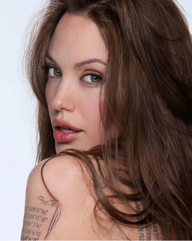

ฉันชื่อ แองเจอลินา โจลี เกิดเมื่อวันที่ 4 มิถุนายน ค.ศ 1975 ปัจจุบันอายุ 46ปี ฉันเกิดมาในครอบครัวนักแสดงโดยตรง โดยคุณพ่อ จอน วอยห์(John Voigh)และคุณแม่ มาร์เชลีน เบอร์ทรานด์(Marcheline Bertrand) ต่างก็เป็นนักแสดงทั้งคู่
และฉันยังมีพี่ชายอีกคนหนึ่ง คือ เจมส์ เฮเว่น(James Haven)ซึ่งมีอาชีพเป็นนักแสดงเหมือนกัน และหลังจากนั้นพ่อกับแม่ของฉันได้แยกทางกัน คุณแม่ของฉันก็ลาออกจากการเป็นนักแสดง
เพื่อที่จะเลี้ยงดูฉันและพี่ชายได้อย่างเต็มที่ ฉันจะชอบดูภาพยนต์กับคุณแม่บ่อยมากๆ และนั่นเป็นเหมือนกับแรงบันดาลใจฉันให้ทำตามความฝัน เพื่อที่จะโลดแล่นในวงการฮอลลีวูด
ฉันเคยไปฝึกฝนที่สถาบัน Lee Strasberg Theatre Institute และหนังเรื่องแรกของฉันคือบทตัวประกอบใน Lookin’ To Get Out (1982) ที่คุณพ่อของฉันแสดงและเขียนบท
แต่หลังจากนั้นมา ฉันก็ตัดสินใจไม่ใช้ชื่อ-นามสกุลเพราะไม่อยากให้คนติดภาพและกล่าวหาว่าเป็นลูกดารา ในยุค 90s ฉันได้เล่นภาพยนตร์หลายเรื่อง ทั้ง Hackers (1995), Mojave Moon (1996)
และภาพยนตร์โทรทัศน์ George Wallace (1997) ที่ทำให้ฉันชนะรางวัลลูกโลกทองคำเป็นครั้งแรก
แต่บทที่สร้างชื่อให้ฉันในวงการและทำให้คนเริ่มเห็นศักยภาพก็ต้องเป็นภาพยนตร์โทรทัศน์เรื่อง Gia (1998)
โดยฉันได้คว้ารางวัลลูกโลกทองคำตัวที่สองจากบทนี้